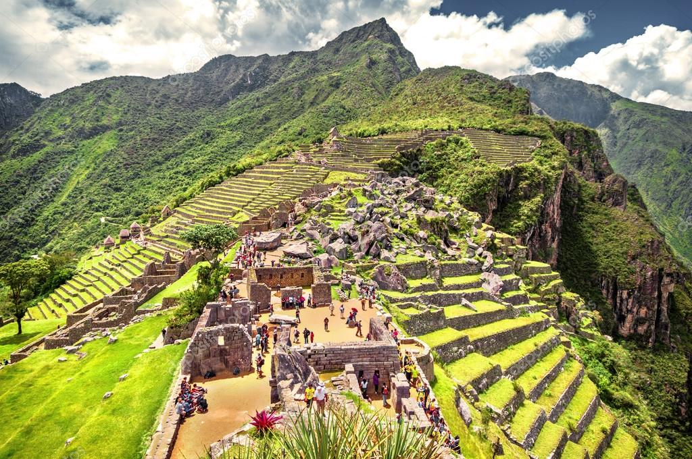
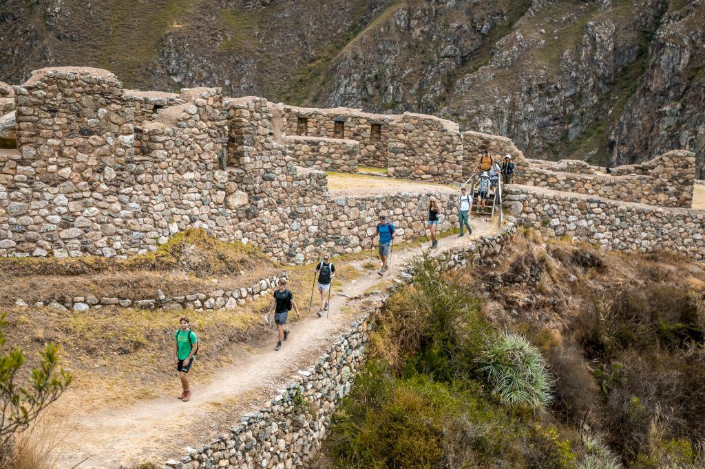

▤
Arquitectura
Destacaron por la construcción en piedra y la adaptación de sus edificaciones al relieve montañoso.
Conoce la historia, la organización y el extraordinario legado de la civilización inca.
Explorar la historia ↓El Tahuantinsuyo, nombre que alude a las cuatro regiones unidas, fue un gran Estado andino que tuvo su capital en el Cusco. Su expansión se consolidó durante el siglo XV, especialmente bajo el gobierno de Pachacútec y sus sucesores.
La tradición andina conserva relatos sobre los orígenes de los incas, como la leyenda de Manco Cápac y Mama Ocllo. Estas narraciones forman parte de la memoria cultural y deben distinguirse de los hechos reconstruidos por la investigación histórica.
En 1532, la llegada de las fuerzas españolas encabezadas por Francisco Pizarro abrió una etapa de conquista y transformación del mundo andino. Sin embargo, numerosas lenguas, saberes y costumbres de sus pueblos continúan vivos.

El territorio se organizaba en cuatro grandes regiones vinculadas con el Cusco.
| Suyo | Ubicación general | Característica |
|---|---|---|
| Chinchaysuyo | Noroeste | Región extensa hacia el norte andino. |
| Antisuyo | Noreste | Territorios orientales próximos a la Amazonía. |
| Collasuyo | Sureste | Altiplano y territorios del sur. |
| Contisuyo | Suroeste | Regiones hacia la costa del Pacífico. |
Las orientaciones son aproximadas respecto del Cusco.
Destacaron por la construcción en piedra y la adaptación de sus edificaciones al relieve montañoso.
Desarrollaron andenes, canales de riego y técnicas para aprovechar diversos pisos ecológicos.
Una gran red de caminos conectó poblaciones, centros productivos y espacios ceremoniales.
El legado inca se aprecia en las lenguas andinas, las tradiciones comunitarias, los conocimientos agrícolas y el patrimonio arquitectónico del Perú y otros países sudamericanos.
El Qhapaq Ñan fue inscrito en la Lista del Patrimonio Mundial de la UNESCO en 2014, como patrimonio compartido por seis países.
Conocer el reconocimiento de la UNESCO ↗
Responde las preguntas. Este formulario es una demostración local y no envía datos a un servidor.